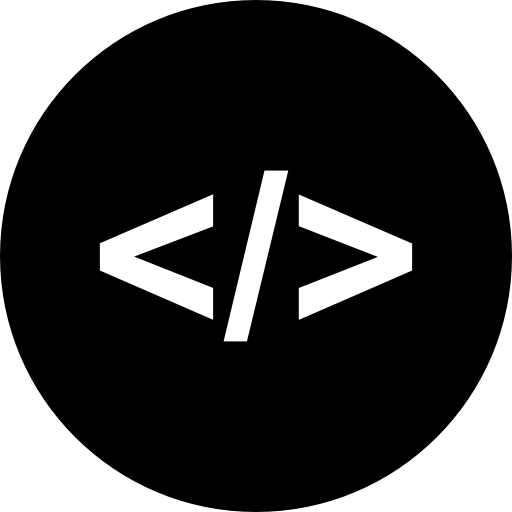

My Projects
Pong
Also able to be played with two people using wasd and the arrow keys. The AI predicts where the ball is going to land vertically on the other side and moves the paddle in time to hit it. It was made using python tkinter.
Tic-Tac-Toe
This is also able to be played with two people by just clicking the boxes during your turn. When the space bar is clicked, using the minimax algorithm, the AI will play the move with the best end result for whoevers turn it is. The gui was also made using python tkinter.
Gravity
The program calculates each of the bodies gravitational acceleration on each other then adjusts their vectors and then moves them based on the time step each frame and follows that step with a trail. It is already progrmamed with a scale model of the solar system with every pixel being one million kilometers and all the calculations are and vectors are to scale. There is also a sidebar in the gui to add, modify, and delete bodies and to change the focus of the simulation. This was also made in python tkinter.
Website
Website with an all three options chi-queares calculator and a regression calculator. The chi squares calculator provides a table that you can add rows and column to and calculates the text statistic and p-value. The regression calculator can take input from either a table or text box and outputs the least squares regression line and the test statistic and p value of its slope. https://eshan168.github.io/statcalculator/